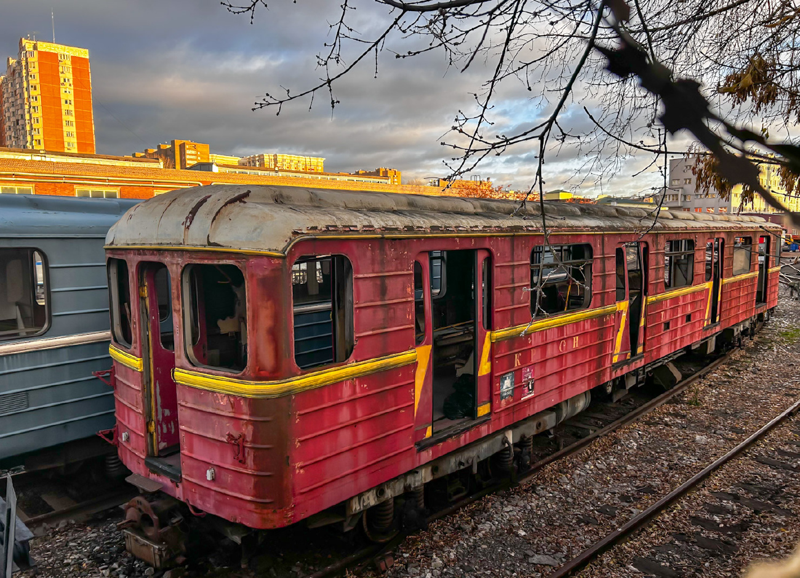
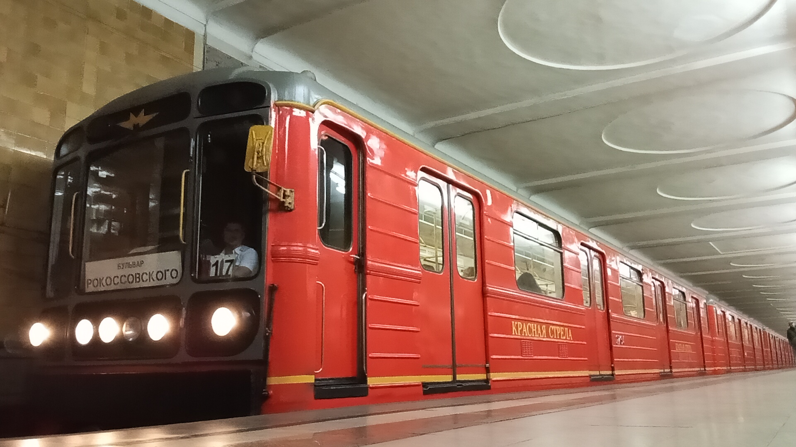

Красная стрела
Этот именной состав был построен в августе 2006 года в честь 75-летия легендарного поезда «Красная стрела» (1931–2006). После испытаний в ТЧ-2 «Сокол» он отправился на работу в ТЧ-1 «Северное».
Головной вагон **№ 2763** начал работу с пассажирами 29 сентября 2006 года. До сих пор состав ходит по Сокольнической линии — вы можете на нём прокатиться!
Общая информация
📅 Постройка
Август 2006 года. Заводская постройка вагонов модели 81-717.5М / 81-714.5М (МВМ).
🏭 Депо
ТЧ-1 «Северное». Испытания проходил в ТЧ-2 «Сокол».
🎉 Повод
Построен в честь 75-летия поезда «Красная стрела» (1931–2006).
🛤️ Линия
Сокольническая линия (СокЛ). Работает с пассажирами с 29.09.2006.
Состав поезда
2763 — 1699 — 1700 — 1701 — 1702 — 1938 — 2764
(с 04.2010, после замены вагона 1703 на 1938)
Вагоны состава
| Параметр | Значение |
|---|---|
| Модель | 81-717.5М/81-714.5М (МВМ) |
| Построен | 08.2006 |
| Депо | ТЧ-1 «Северное» |
| Назначение | Пассажирский |
| Начало работы | 29.09.2006 |
| Текущее состояние | Эксплуатируется |
| Примечание | «Красная стрела» |
Интерьер и экстерьер
🎨 Окрас
- 08.2006 — 08.2016: красного цвета с жёлтыми полосами по борту и рисунком «75» на дверях
- С 08.2016: красного цвета с жёлтыми полосами по борту; двери полностью закрашены в красный цвет
🔧 Конструкция
- Три ребра жёсткости
- Расположение сигнальных ламп: вертикальное
- Компоновка фар: 1-4-1
🪑 Интерьер
- Вертикальные поручни жёлтого цвета с оранжево-красными крепежами
- Антивандальные сиденья красного цвета
- Пластик светло-рыжего цвета под дерево
- Освещение: лампы типа ЛПВ-02
⚠️ Трагедия
29 марта 2010 года в вагоне № 1703 произошёл террористический акт на станции «Лубянка». Вагон был повреждён и позже заменён на № 1938.
История состава «Красная стрела»
Постройка состава
Все 7 вагонов состава, включая головные 2763/2764 и промежуточный 1703, построены на заводе (МВМ) в честь 75-летия поезда «Красная стрела».
Прибытие в метрополитен
Состав отправлен с завода. Прибыл через гейт ТЧ-2 «Сокол» и поступил в депо приписки ТЧ-1 «Северное».
Выход на линию
Именной состав начал регулярную перевозку пассажиров на Сокольнической линии.
Теракт на станции «Лубянка»
Вагон № 1703 оказался в эпицентре террористического акта. Он получил критические повреждения, восстановлению не подлежал и был отставлен от эксплуатации.
Замена вагона
Повреждённый вагон № 1703 выведен из состава и ожидает списания. Вместо него в состав включён вагон № 1938. Обновлённая составность: 2763 — 1699 — 1700 — 1701 — 1702 — 1938 — 2764.
Капитальный ремонт
Обновлённый состав прошёл капитальный ремонт на ВРК «Выхино».
Смена оформления
Вагоны состава перекрашены по новой схеме: двери полностью закрашены в красный цвет.
Парад поездов
Состав «Красная стрела» принимает участие в Параде поездов на Кольцевой линии.
Фотогалерея

Последствия трагедии 2010 года.

В нынешнем виде.
Внутреннее убранство.
Нажмите на фото для увеличения
«Красная стрела» — это не просто именной состав. Это память о легендарном поезде, символ эпохи и напоминание о трагических страницах истории Московского метрополитена».